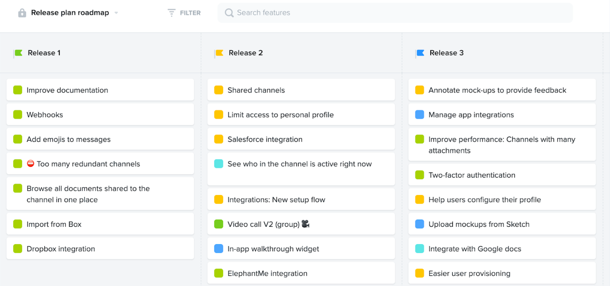

- Worked on 30+ web-development projects creating product development roadmaps, and product documentation
- Planned website architecture, feature implementation, blog design, layout navigation, and MVP development based on product requirements
- Conducted site audit to identify organic growth opportunities, fix errors, make industry standard recommendation
- Evaluated important KPIs that affect website traffic, service quotas, & target audience using Google Analytics, Google Search Console, & Google Tag Manager based on requirements
- Created digital analytics report to present key insights and recommendations to various stakeholders and communicated directly to the Vice-President of the Product & CEO
Achievements:
- Wrote internal memo for better project requirements, SEO, & Ads documentation benefiting 40+ employees
- Coordinated 30+ digital marketing projects with cross-team collaboration (web developers, content development, SEO, email, and project team)

Product Development Roadmap @Productboard
Other Relevant Works
I also had the opportunity to oversee various media campaigns and SEO implementation. I created various reports and internal documents based on digital requirements that increased TDN’s operational efficiency.
SEO Report For A Client
Internal Document - Top Factors in SEO for 2021 to Focus
Internal Document - Top Factors in SEO for 2021 to Focus
Content Editorial Calendar